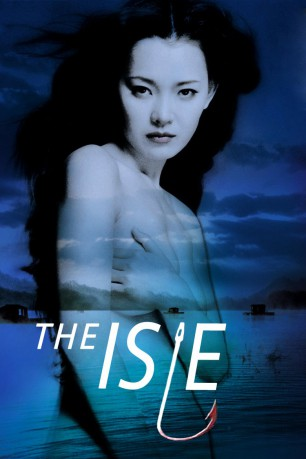

#3892 Seom - Die Insel
Alternativ: The Isle (Originaltitel)
 
 IMDB-Wertung: 7.1 / 10
IMDB-Wertung: 7.1 / 10  Metascore: 0
Metascore: 0 
Fünfter Film des gefeierten südkoreanischen Regisseurs Kim Ki-Duk, in der wiederum Sexualität, Unterdrückung und Gewalt zentrale Themen sind. Eine junge Frau lebt am Ufer eines Sees und versorgt Angler mit Lebensmitteln, Ködern und käuflicher Liebe. Die Männer wohnen in winzigen Hütten auf schwimmenden Plattformen im See und vertreiben sich die Zeit mit Angeln, Saufen und Sex. Da tritt ein Flüchtender in ihr Leben... Er hat seine Frau getötet und ist an den See gekommen, um zu sterben.
Jahr: 2000
Dauer: 90 Minuten
FSK: 16
Land: Süd-Korea Studio: Rapid Eye MoviesTonspuren:
Untertitel: Deutsch,
Auflösung: 720p (1280x720) Größe: 3348 MB
Genre: Thriller, Drama
Regisseur: Ki-duk Kim
Drehbuch: Daniel Waters
Soundtrack:
Darsteller:
- Jung Suh als Hee-Jin
- Hang-Seon Jang als Middle-aged man
- Yoosuk Kim als Hyun-Shik
- Sung-hee Park als Eun-A
- Jae-hyeon Jo als Mang-Chee
- Won Seo als
Datei: X:\HD-Eastern-Modern(N-Z)\Seom - Die Insel (2000, FSK16, 1280x720).mkv seit 29.06.2016
Festplatte: HD Eastern+Western
 Es gibt insgesamt 76 Filme in der Gruppe 'HD-Eastern-Modern(N-Z)'
Es gibt insgesamt 76 Filme in der Gruppe 'HD-Eastern-Modern(N-Z)'